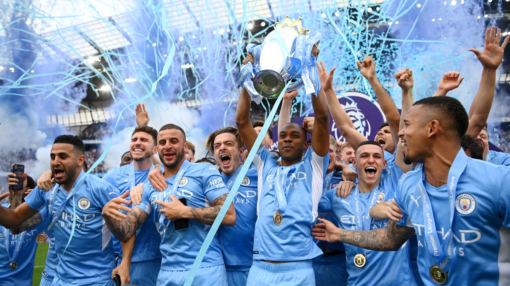

Data Story
Premier League 21-22
Research Question:
“How influential was the home advantage for the Big Six football clubs in the 21-22 premier league season?”
About the Premier League
The Premier League is the highest tier of football matches in the English football league. A total of 20 top football teams will compete in this league, which takes place between August and May annually, for a total of 380 matches.
Three points are awarded for a win, one point for a draw, and none are awarded for a loss. The champion emerges with the most points at the end of the season and wins the Premier League title.
Read more on the Premier League’s official website.
Big Six FCs
Of the 20 football clubs that compete in the Premier League, there have been a dominance of six main football teams since the 2010s.
These six football clubs include (in no particular order):
| Team | Number of Wins (since 2009) |
|---|---|
| Manchester United | 2 |
| Liverpool | 1 |
| Arsenal | 0 |
| Chelsea | 2 |
| Manchester City | 7 |
| Tottenham Hotspur | 0 |
More information about why these clubs are the “Big Six” can be found here.
Premier League 2021-2022

In the Premier League season of 2021-2022, Manchester City football club clinched the championship once again, after winning the 2020-2021 season as well, clocking their 6th Premier League title.
The Data
Two sets of data “soccer” and “weekly rank” with the following variables:
'data.frame': 380 obs. of 22 variables:
$ Date : chr "13/08/2021" "14/08/2021" "14/08/2021" "14/08/2021" ...
$ HomeTeam: chr "Brentford" "Man United" "Burnley" "Chelsea" ...
$ AwayTeam: chr "Arsenal" "Leeds" "Brighton" "Crystal Palace" ...
$ FTHG : int 2 5 1 3 3 1 3 0 2 1 ...
$ FTAG : int 0 1 2 0 1 0 2 3 4 0 ...
$ FTR : chr "H" "H" "A" "H" ...
$ HTHG : int 1 1 1 2 0 1 2 0 2 0 ...
$ HTAG : int 0 0 0 0 1 0 0 1 1 0 ...
$ HTR : chr "H" "H" "H" "H" ...
$ Referee : chr "M Oliver" "P Tierney" "D Coote" "J Moss" ...
$ HS : int 8 16 14 13 14 9 13 14 17 13 ...
$ AS : int 22 10 14 4 6 17 11 19 8 18 ...
$ HST : int 3 8 3 6 6 5 7 3 3 3 ...
$ AST : int 4 3 8 1 3 3 2 8 9 4 ...
$ HF : int 12 11 10 15 13 6 18 4 4 11 ...
$ AF : int 8 9 7 11 15 10 13 14 3 8 ...
$ HC : int 2 5 7 5 6 5 2 3 7 3 ...
$ AC : int 5 4 6 2 8 4 4 11 6 11 ...
$ HY : int 0 1 2 0 2 1 3 1 1 2 ...
$ AY : int 0 2 1 0 0 2 1 1 0 1 ...
$ HR : int 0 0 0 0 0 0 0 0 0 0 ...
$ AR : int 0 0 0 0 0 0 0 0 0 0 ...'data.frame': 760 obs. of 5 variables:
$ Team : chr "Man United" "Chelsea" "Liverpool" "West Ham" ...
$ GD : int 4 3 3 2 2 2 1 1 1 1 ...
$ Points: int 3 3 3 3 3 3 3 3 3 3 ...
$ Rank : int 1 2 3 4 5 6 7 8 9 10 ...
$ Week : int 1 1 1 1 1 1 1 1 1 1 ...| Variable | Significance | Used For | Type | DF |
|---|---|---|---|---|
| $HTHG | Half Time Home Goals | Analysis of home advantage on half time result | INT | soccer |
| $HTAG | Half Time Away Goals | Analysis of home advantage on half time result | INT | soccer |
| $HTR | Half Time Result | Analysis of home advantage on half time result | CHR | soccer |
| $FTHG | Full Time Home Goals | Analysis of home advantage on full time result | INT | soccer |
| $FTAG | Full Time Away Goals | Analysis of home advantage on full time result | INT | soccer |
| $FTR | Full Time Result | Analysis of home advantage on full time result | CHR | soccer |
| $Team | Football Club Name | Analysis of effect of home advantage on weekly ranking of each FC | CHR | weeklyrank |
| $Rank | Ranking out of 20 | Analysis of effect of home advantage on weekly ranking of each FC | INT | weeklyrank |
| $Week | Week Number | Analysis of effect of home advantage on weekly ranking of each FC | INT | weeklyrank |
Creating a new data frame:
Creating a new data frame (df) by selecting columns “Date”, “HomeTeam”, “AwayTeam”, “FTR”, “FTHG” and “FTAG”.
Findings:
Home Team vs Away Team wins for Big 6 Teams:
From the findings, it is clear that from a glance, most of the time the home team will get a win when playing on home grounds. This is most prominent in the case of Liverpool, where out of 20 games, up to 16 games were Home Team wins, and the rest were draws.

The advantage could be constituted by the number of shots on target for the home teams on home grounds, considering how they may be used to playing with the specific environments on home ground.
Hence, looking at all six teams’ shots on target when on home grounds as opposed to their opponents:

For all of the teams, the home team lines largely seem to be greater than that of the away teams. This is further highlighted for teams A to E, Manchester United, Liverpool, Arsenal, Chelsea and Manchester City, whose home shots on target seem to spike much more in matches against away teams, reaching highs that pull the difference apart. However, Tottenham is an exception, with the highest scores being held by the away teams, hitting up to 10 shots on target.
Overall, it seems that the home advantage was indeed influential in helping team have more shots on target. 🤔
Weekly rankings of each team (H vs A vs D):
Plot the rankings of each team by week number (bar graph)
Team Week Rank
1 Man United 1 1
2 Chelsea 1 2
3 Liverpool 1 3
4 West Ham 1 4
5 Everton 1 5
6 Brentford 1 6
From the above graph, we can see that most of the teams seem to stay largely at the top ranks for each week, especially teams like Liverpool, Chelsea, and Manchester United. Hence, we take a look at the proportion of games overall played on home ground for each of these three teams to compare:
Move on over to EPL 21-22 for more information!
Conclusion
All in all, it is clear that most of the teams playing on home ground do have some advantage, and it does have significant contribution for the games, however there are exceptions such as for teams like Tottenham, and in such cases it is valuable to consider other variable factors affecting the gameplay of the teams involved.
Thanks for reading, and we look forward to our new champions from the ongoing 2022/2023 English Premier League! ⚽
References:
Premier league competition format & history | premier league. (n.d.). Retrieved 6 November 2023, from https://www.premierleague.com/premier-league-explained
Premier League match data 2021-2022. (2022, September 25). Kaggle. https://www.kaggle.com/datasets/evangower/premier-league-match-data
Rfordatascience. (n.d.). GitHub - rfordatascience/tidytuesday: Official repo for the #tidytuesday project. GitHub. https://github.com/rfordatascience/tidytuesday/
Who are the Premier League ‘big six’? Top English clubs & nickname explained. (2021, August 13). https://www.sportingnews.com/ca/soccer/news/who-are-premier-league-big-six-top-english-clubs-nickname-explained/8onqxiy3jynf1qr8b8kt8aags